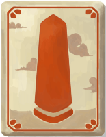

Slay The Spire
Ironclad
Silent
Defect
Watcher
Czym jest "Slay the Spire"?
Podstawowe mechaniki
Geneza i rozwój
Popularność i wpływ
Witam na stronie! Jest to strona poświęcona grze o tytule "
Slay The Spire
". Zawiera ona informacje na temat gry, historii powstania oraz jej wpływ na popularność gatunku.
